This tutorial is aimed squarely at the novice GIMP user. The more experienced user may find some techniques here useful. This is the same procedure I used to create the logo on my homepage, albeit with slightly different settings. I'll point out the differences as I go along. I've taken a lot of screen shots to support this tutorial, so enjoy :)
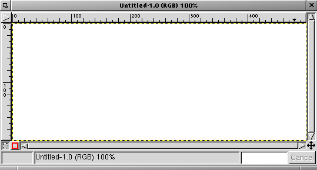
Fire up The GIMP and create a new image. I used a white background at 500px by 200px. I feel this size it adequate as my website at the time of writing uses 500px tables.
Start by laying down some text that is wider than 400px and not too thin. I've used a font called Pricedown. The text should be created as a new layer. If you use GIMP FreeType then it is done for you, otherwise click the New Layer button in the Layers, Channels, & Paths dialog (looks like a blank piece of paper). It will help to change the layer size to that of the image. Do so by accessing the Layers menu (right click or Control+Click on the layer you wish to operate on) and select Layer to Imagesize.
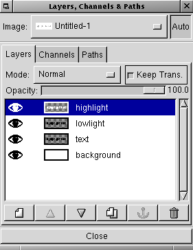
Duplicate the text layer (text) twice. One for the highlight effect (highlight) and one for the shaded part of the effect (lowlight). The highlight layer needs to be white, so select that layer, check the Keep Trans. box on the Layers, Channels, & Paths dialog, and fill it with white. You can do this easily by dragging the white color swatch from the toolbox over to the image (assuming that the highlight layer is currently selected). Keep Trans. means "Keep Transparency"; this will ensure that any transformations or fills made to that layer will only affect the non-transparent part of the image.
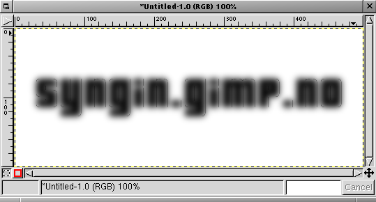
Duplicate the text layer again and move it to the top of the Layers stack (use the little up facing arrow head on the Layers, Channels, & Paths dialog).
Make sure that Keep Trans. is un-checked and then blur it. I used Gaussian Blur (RLE) at 10 pixels. When I did the original logo, it was set lower than
this to make the effect less rounded.
You will need to make sure that the layer boundary is larger than the layer so that the blur can spread nicely. Step 2 mentions this.
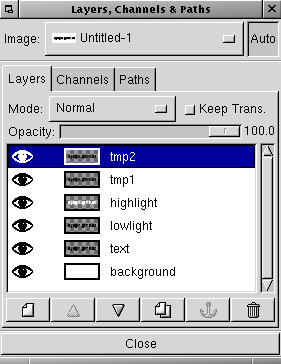
Duplicate the blurred layer once (tmp1 and tmp2). These layers are used to create the edge lighting for the text.
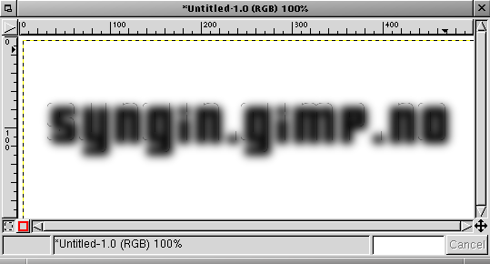
Nudge one of the blurred layers (tmp1) down and to the right about 5 pixels. The precise number of pixels depends on how blurred and thus how round the text will appear to be, so use your best judgement. You can nudge layers my using the Move tool and the cursor keys on your keyboard. It doesn't matter which of the blurred layers you use in this step, as long as you know which one you didn't move \x{2013} you'll be needing to do a very similar thing to that one soon.
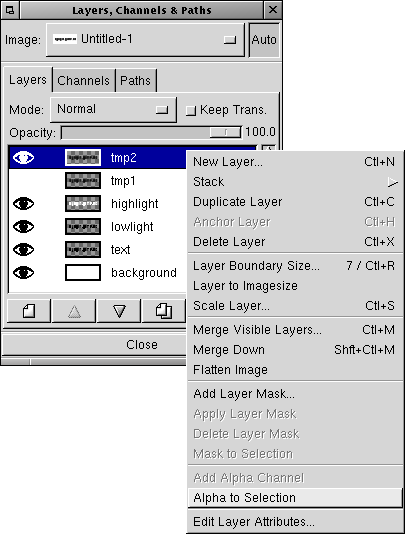
Now create a selection using the blurred layer (the one you moved in step 6) using Alpha to Selection. This selection is a precise selection based on the layer and includes alpha (transparency) information. Handy stuff. You'll notice that I've turned off the layer below (the other blurred layer). This was done to make sure I could see how far I moved this layer during step 6.
Now that the layer is selected...
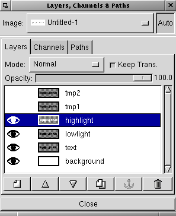
Select the highlight layer and...
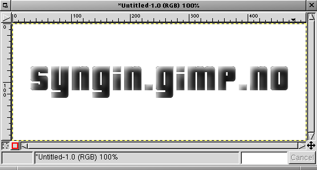
Cut (edit/cut or CTRL+X on PC or Command+X on Mac). This will remove the blurred layers selection from the highlight layer. You could do this with channel masks, but I'm a man of simple needs and wants. There's another step after this that I haven't documented, but that's because it's the same thing again (steps 6-10) but with the other layer (tmp2: see steps 5 and 6). Move (nudge) that layer in the opposite direction (up and to the left about 5 pixels), then make the cut from the lowlight layer. Once you're done, delete the two blurred layers (tmp1 and tmp2).
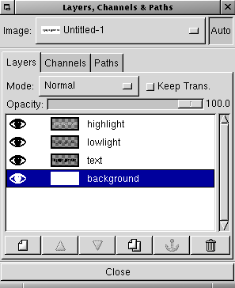
I like to take quasi-breaks while doing some images, and this is one of those times. A good time to roll a cigarette or grab a cup coffee. I also tend to clean up temporary layers occasionally.
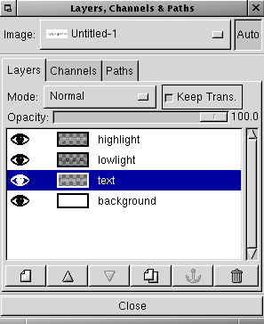
Now we'll add the first elements of 3D-ness to the logo. The original text layer is the base layer for any color you want to add. I'll use grey70, but you could just as easily use any old color you like. It's a good idea to play with this as you can get some funky plastic logos too. Make sure Keep Trans. is checked when you fill the layer.
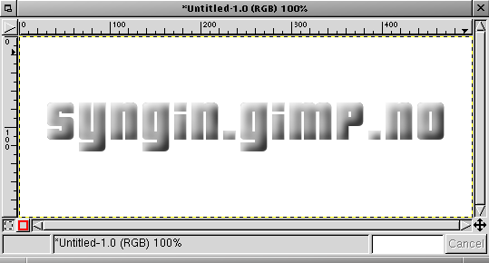
As you can see, it's starting to look like something now.

Click the blank piece of paper on the Layers, Channels, & Paths dialog and make a new transparent layer called outline. Move this new layer down the layers stack until it's underneath the original text layer.
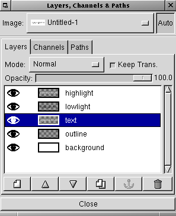
Select the original text layer (the one you added some color to) and do the Alpha to Selection trick again. Right click on the image and use Select > grow. This will make the new selection larger by a number of pixels - I used a value of 2 pixels. Once you have a selection, be sure to reselect the new layer (outline) so that you can fill it (step 17). And below is what it looks like.
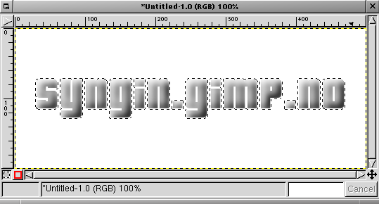
And this is what it looks like.
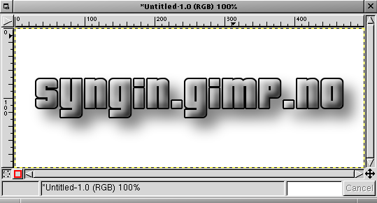
Fill the layer with black and deselect (CTRL+SHIFT+A on PC or Command+SHIFT+A on Mac).
As you can see, the image now has more background contrast.
Now, duplicate that layer and lower the copy below the original outline layer. Make sure that Keep Trans. is not checked, and blur it.
I like soft shadows, so I used a Gaussian Blur (RLE) of about 30 pixels. Drop the Opacity of the layer down to about 50 and nudge it
to the right and down until it looks okay.
A nice way to fill selection areas or layers that have Keep Trans. selected, is to simply drag the color from the
toolbox color swatch to the layer.
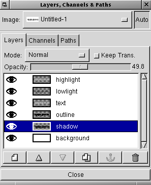
This is what the Layers, Channels, & Paths dialog should look like.
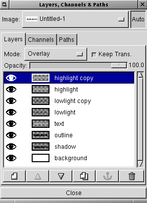
I've duplicated the highlight and lowlight layers and made them all blend with the lower layers using the Overlay mode. This helps to make the edges more 3D.
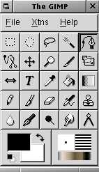
Create a new transparent layer called rust and select the bezier tool (shown here as the depressed button).
Rust isn't uniform and I've decided to only worry about the lower half of the letters. Use the bezier tool on the new rust layer to start a selection that looks like...
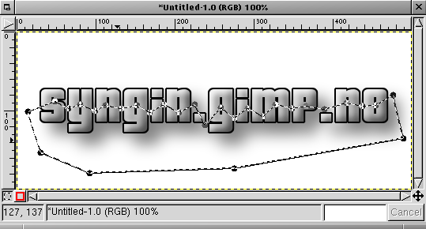
This. Click inside the bezier path once you close it (close it by clicking one the first node). This will create a selection. Use Select > feather to feather (blur) the selection. I used a value of about 10 pixels.
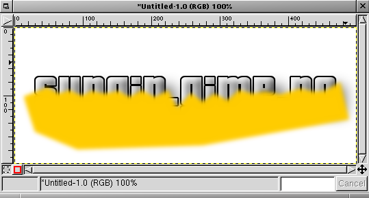
Pick a nice bright orange or brown color for the rust. My site logo used a reddy-borwn color, but here I've chosen a bright orange. Fill the selection with it. Using the famed Alpha to Selection move, get the selection for the original text layer. Once you have that selection area, click the rust layer to make it active. Invert the selection (CTRL+I or Command+I) and Cut. This will leave only the part of the rust layer that actually covers the letters and not the extra.
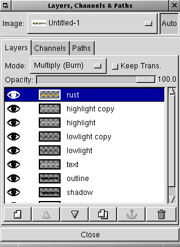
Change the Layer Mode of the rust layer to Muliply (Burn).
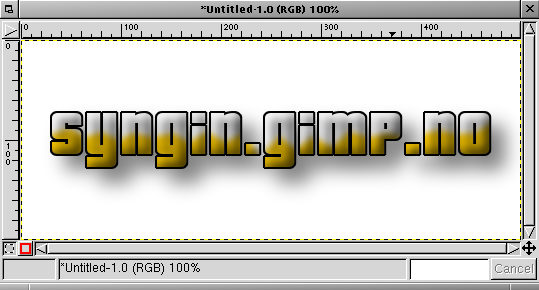
The image should now look a little like this (Right Image). Don't worry, it'll look better soon.
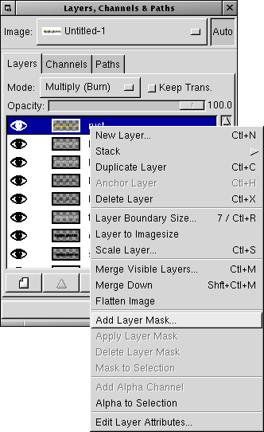
With the rust layer selected, add a Layer Mask.
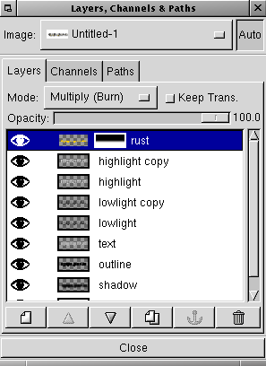
Making sure that you reset the color swatches on the toolbox, use the gradient tool to make a gradient in the Layer Mask so it looks like this.
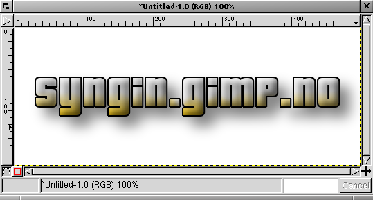
The image should now look like this.
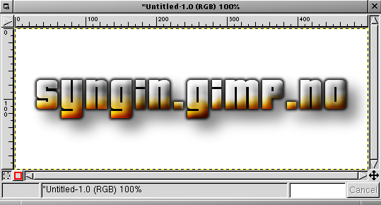
With a little playing around you can get to this. I duplicated the rust layer and moved them (the original rust and the copy) down the stack until the highlight and lowlight layers were above them. I also duplicated the original text layer, switched on Keep Trans., and used Render > Clouds > Noise to add a bit of interest to the layer. Try using the Curves tool to help with this. You may also notice that the outline layer is blurred. Sometimes this can help. The idea is, try stuff and find out.
Well, thats it. Hope that taught you the power of selections and layer modes to some degree. There are many people who tout the use of channel masks, but don't under estimate the power of selections to do your dirty work.
The original tutorial can be found here.